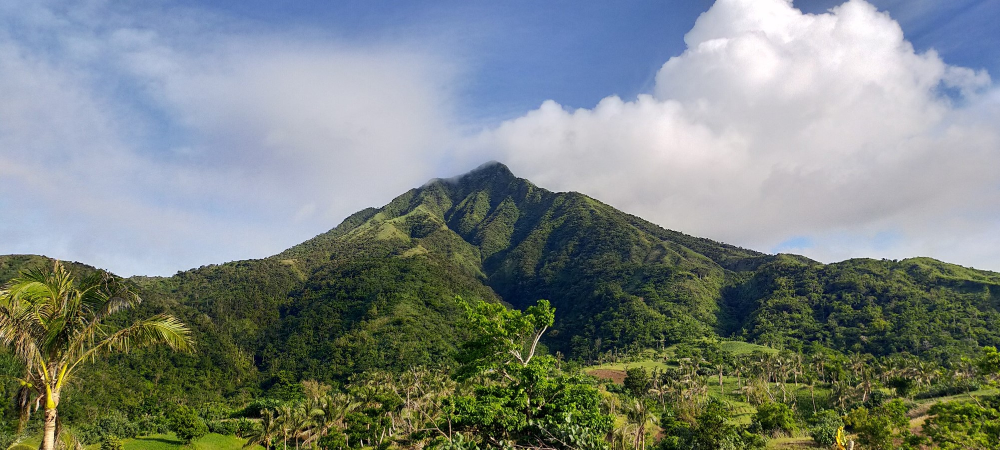
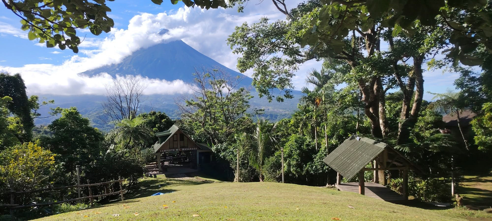
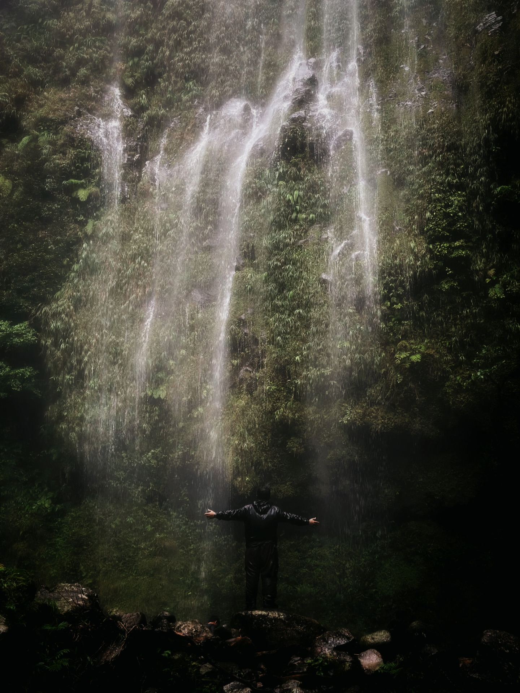
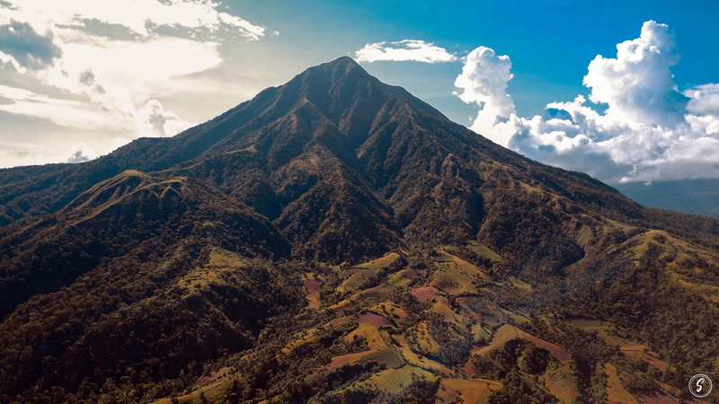
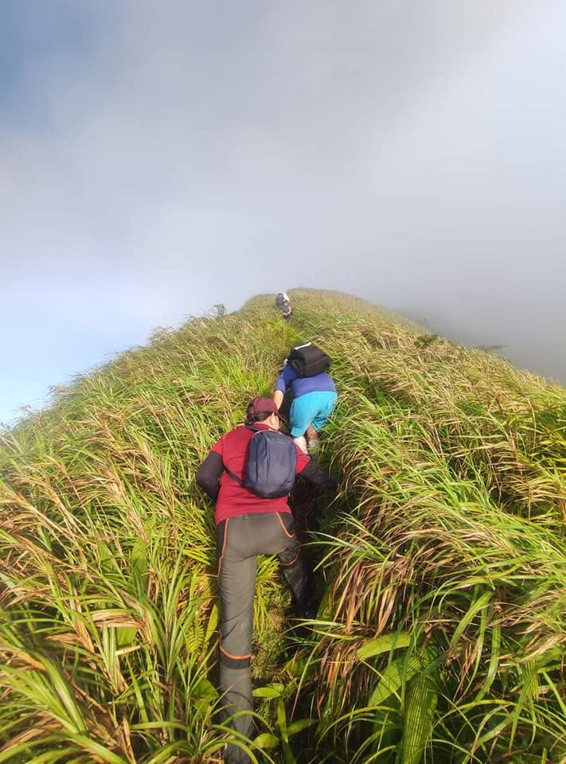
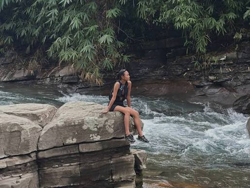

MT. MASARAGA PROTECTED LANDSCAPE
Official Eco-Tourism Portal
Desktop
REAL-TIME ELEVATION & TRAIL MAPPING
Trail Showcase
Explore the authorized routes for ascending Mt. Masaraga.
Elevation Profile
Elevation Profile: Mt. Masaraga
Continuous steep assault through tropical rain forest and technical mossy ridgelines.
Trail Difficulty
Duration 1-2 Days
Trail Class Class 3-4
Technicality High (Fixed Ropes)
Major Climb
Key Waypoints
Sitio Sabluyon Jump-off
Registration, guide assignment & safety briefing
Camp 2 (Assault Base)
Staging ground before steep ridge climb
Mt. Masaraga Summit
360° view of Mayon Volcano and Albay Gulf
Tablet
INTERACTIVE ECO-ZONE EXPLORATION




Mount Masaraga Summit
‹›
An inactive 1,328-meter stratovolcano featuring steep, rugged ridges and mossy forests. Regulated trekking trails lead to the summit crest, offering a stunning 360-degree view of Mt. Mayon and Mt. Malinao.
Mobile
INSTANT LIGHTBOX & HIKER GUIDELINES
Trail Gallery

Mossy Ridge Line Protected Canopy Boardwalk
Protected Canopy Boardwalk Vanishing Falls
Vanishing Falls
Trail Assault
Near the point elevation trail
1 of 4
Trail Showcase

YOUR TREK BEGINS HERE
Secure Permits • Protect Endemic Wildlife • Explore Responsibly
masaraga.gov.ph/portal